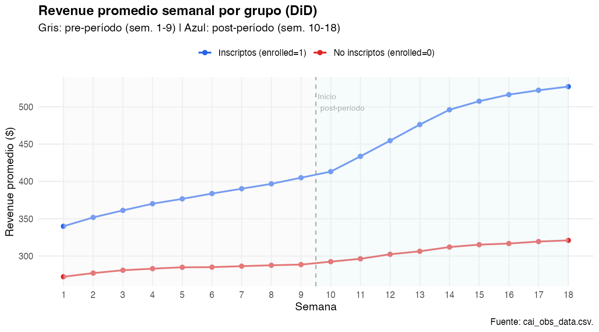

MarTech Consultant Assessment
Causal Inference in Experiments
Fernanda Cortés | 11/24/2026
Exercise 1 — What was tested?
| Element |
Detail |
| Campaign A — Control |
Standard push notification (no urgency) |
| Campaign B — Treatment |
Push notification with a 24-hour countdown timer |
| Users |
50,000 randomly assigned — 24,857 control (50%) | 25,143 treated (50%)
Why not exactly 50/50? |
| Target metrics |
Conversion rate (did they buy?) and total revenue per user |
| Method |
RCT — the gold standard for measuring causality |
By randomly assigning users, any difference in outcomes is due
exclusively
to the campaign, not to pre-existing differences between groups.
Exercise 1 — Groups are equivalent before the test
Pre-treatment characteristic comparison. Continuous: mean difference.
Categorical: percentage distribution by category (difference in pp).
Group characteristics before the experiment
| Variable |
Control |
Treated |
Difference |
p-value |
| Recencia (dias) |
14.85 |
14.98 |
+0.130 dias |
0.330 |
| Frecuencia (visitas) |
4.00 |
3.99 |
-0.008 visitas |
0.640 |
| Duracion de sesion (min) |
8.02 |
8.01 |
-0.003 min |
0.902 |
| Puntaje de satisfaccion |
7.00 |
7.01 |
+0.004 Puntaje de satisfaccion |
0.793 |
| Antiguedad del dispositivo (anos) |
1.99 |
2.00 |
+0.008 anos |
0.638 |
| Canal de adquisicion |
|
|
|
|
| organic |
44.3% |
44.4% |
+0.12 pp |
0.779 |
| paid_search |
32.8% |
32.7% |
-0.05 pp |
0.912 |
| social |
23.0% |
22.9% |
-0.08 pp |
0.835 |
| Plataforma |
|
|
|
|
| android |
34.7% |
35.1% |
+0.44 pp |
0.297 |
| ios |
40.5% |
39.9% |
-0.59 pp |
0.177 |
| web |
24.8% |
24.9% |
+0.15 pp |
0.702 |
| Nivel de lealtad |
|
|
|
|
| bronze |
33.4% |
33.5% |
+0.12 pp |
0.773 |
| gold |
33.6% |
33.5% |
-0.15 pp |
0.727 |
| silver |
33.0% |
33.1% |
+0.03 pp |
0.951 |
| Note: |
|
Continuous variables: mean difference (t-test). Categorical variables: % distribution per category (difference in pp). |
Exercise 1 — What does the balance table tell us?
1. No significant differences between groups
No pre-treatment variable shows a statistically significant difference
between control and treatment (p > 0.05 in all comparisons),
for both continuous variables and the distribution of acquisition
channel, platform, and loyalty tier.
2. No variable predicts group assignment
Auxiliary regression:
treatment ~ all covariates
R² = 0.0001 · F = 0.33 · p = 0.980
The covariates jointly
do not predict which group
a user was assigned to.
Conclusion: randomization is valid. No selection bias.
Any observed difference in outcomes is attributable solely to treatment.
Exercise 1 — The countdown push works
+11.4 pp
Conversion rate
| Before (control) |
28.1% |
| After (treated) |
39.5% |
| Relative growth |
+41% |
| Per 1,000 users |
~114 more purchases |
+$24.25
Revenue per user
| Average across all users |
includes non-buyers |
| Per 1,000 users |
~$24251 more |
Both effects are statistically significant
(p < 0.0001) and replicable.
They are not attributable to chance.
Exercise 1 — How does the effect operate?
Table 3. Supplementary analysis (HC2 robust SE)
| Modelo |
ATE |
IC 95% inf |
IC 95% sup |
p-valor |
N |
| Conversion rate — ANCOVA |
0.1146 |
0.1064 |
0.1227 |
0 |
50000 |
| Revenue — ANCOVA |
24.2991 |
23.0962 |
25.5020 |
0 |
50000 |
| Ticket promedio (solo converters) |
29.1144 |
27.3585 |
30.8704 |
0 |
16928 |
A. ANCOVA — confirmation of successful randomization:
adding pre-treatment covariates does not change the estimated ATE.
In an RCT this is not "additional precision" — it is evidence that
randomization worked: the effect is robust and independent of
users' prior characteristics.
B. Exploratory analysis — ticket model:
among users who did purchase, the countdown group spent
$29.11 more on average. Exploratory result:
by conditioning on conversion (a post-treatment variable), the estimator
may carry selection bias.
Next step — Uplift modeling:
an uplift modeling approach could be implemented to identify which user
profiles were truly influenced by the countdown push, distinguishing them
from those who would likely have converted even without treatment.
Exercise 2 — The effect varies by how the user arrived
Estimated effect by channel (interaction regression).
Heterogeneity test: F = 197.406 (p < 0.0001) — differences
are not attributable to chance.
Table 4. Countdown push effect by acquisition channel
| Channel |
CATE ($) |
SE |
95% CI lower |
95% CI upper |
p-value |
| organic |
36.4015 |
1.0659 |
34.3124 |
38.4907 |
0 |
| paid_search |
18.8692 |
0.9994 |
16.9103 |
20.8281 |
0 |
| social |
8.3278 |
0.9322 |
6.5007 |
10.1549 |
0 |
Organic: $36.40
High purchase intent. The countdown acts as the final closing nudge.
Paid search: $18.87
Has intent but is comparing options. The effect exists but is diluted.
Social: $8.33
No prior intent. Urgency has little impact.
Exercise 2 — Strategic implication
| Channel |
User profile |
Is the countdown worthwhile? |
| Organic |
High purchase intent, knows the brand |
✅ Top priority — maximum return |
| Paid search |
Has intent, but evaluating alternatives |
✅ Recommended — moderate but positive effect |
| Social |
Cold discovery, no formed intent |
⚠️ Review — marginal effect, potentially inefficient cost |
Conclusion: the countdown push is a closing tool,
not an acquisition tool. Concentrating the budget on organic and
paid search maximizes campaign ROI.
Exercise 3 — Process for redesigning the checkout
1. Discovery
Quantitative: Identify the exact step where users abandon
the cart and the checkout bounce rate.
Qualitative: heatmaps and session recordings → detect
hesitation on form fields, mobile scroll issues, or UI confusion.
2. Hypothesis
Every change must respond to a detected problem.
"If we reduce billing fields from 10 to 5 and remove mandatory
account creation, then conversion will increase by 2%,
because we reduce friction and cognitive effort."
3. Variables
Independent: the change itself (1-step vs. 3-step checkout,
button color, hiding the navigation menu).
Dependent: conversion rate (primary) + time in checkout
and cart abandonment rate (secondary).
Control: traffic, acquisition sources, active promotions.
4. Execution (A/B test)
Traffic split randomly:
•
Group A (control): original checkout
•
Group B (treatment): modified checkout
Duration: until the pre-specified N is reached and at least
2 full weeks have passed to capture weekly variation.
5. Analysis & iteration
Compare versions using the experimentation software (Braze / Altitude).
•
Group B converts more → hypothesis validated, change rolled out to all users.
•
No change or conversion drops → idea discarded, new hypothesis formulated.
Exercise 3 — Steps 3 & 4: variables and test design
The hypothesis (step 2) directly defines what to measure and how to assign.
If the problem is checkout friction, the dependent variable is whether the user completed the purchase.
| Variable / Decision |
Choice |
Justification |
| ✅ Primary metric (OEC) |
Purchases / users who started checkout |
Directly measures friction. High frequency, low variance → manageable N.
Revenue: high variance and at checkout the user has already decided what to buy. |
| Guardrail metrics |
Revenue/user · NPS · time in checkout · abandonment |
Detect if conversion is gained but experience or ticket size is lost. |
| Randomization unit |
User (user_id), assigned at checkout start |
Prevents the same user from seeing both versions. This way each person counts once and the conversion rate is measured on the same base in both groups.
Old app versions: exclude or analyze separately. |
| Assignment ratio |
50% control / 50% treatment |
Maximizes statistical power for a given N. |
Empirical baseline (control group, Ex. 1): p₀ = 28.1%.
In production, use historical checkout data instead.
Exercise 3 — Step 4: how many users and how long?
Sample size
p₀ = 28.1% · MDE = 2 pp · α = 0.05 · power = 80%
→ 8,100 users per group (16,200 total)
Minimum duration
max(statistical days, 14 days)
14 days = 2 Monday-Sunday cycles. In markets with biweekly pay
(days 1 and 15), captures at least one post-payday and one pre-payday period.
Estimated duration for n = 8,100 per group
| Users/day at checkout |
Days (statistical) |
Recommended days |
Active constraint |
| 200 |
81 |
81 |
Traffic |
| 500 |
33 |
33 |
Traffic |
| 1,000 |
17 |
17 |
Traffic |
| 2,000 |
9 |
14 |
Weekly cycle |
| 5,000 |
4 |
14 |
Weekly cycle |
With ~1,000 users/day at checkout: minimum 17 days.
High-traffic platforms (≥2,000/day) are constrained by the weekly cycle, not sample size.
Exercise 3 — Steps 4/5: risks that can invalidate the test
Before launching the experiment and before reading the results, verify:
| Risk |
Type |
What can happen? |
Mitigation |
| SRM | Internal |
Ratio is not 50/50 due to assignment bug → biased estimator |
Chi-square on observed vs. expected ratio. If p < 0.01, invalidate. |
| Bug in the checkout | Internal |
Critical → pause;
Minor → continue + document;
Segment (e.g. iOS 16) → exclude and analyze separately |
Operational monitoring from day 1: alerts on errors,
crashes, load time. Does not interfere with the statistical design. |
| Peeking | Internal |
Reading results before the N target → FPR can exceed 30% with α = 0.05 |
Pre-register read date and N.
No statistical peeking.
Monitor operational metrics (errors, crashes). |
| Temporal heterogeneity | External |
Hot Sale, Buen Fin, Black Friday: baseline conversion rises → result does not generalize |
E-commerce event calendar. If overlap occurs, stratify the analysis. |
Exercise 4 — Are the groups comparable?
Without randomization, groups may differ before the program.
| Variable |
Control (N=10,833) |
SD |
Treated (N=9,167) |
SD |
Difference |
p-value |
| Revenue pre-período ($) |
283.06 |
161.65 |
375.48 |
192.43 |
+92.42 |
0.0000 |
| Antigüedad (meses) |
22.88 |
11.63 |
25.39 |
11.76 |
+2.52 |
0.0000 |
| NPS score |
7.51 |
1.51 |
7.48 |
1.51 |
-0.03 |
0.1425 |
| Segmento |
|
|
|
|
|
|
| basic |
38.2% |
|
20.2% |
|
-18.05 pp |
0.0000 |
| standard |
49.4% |
|
49.8% |
|
+0.44 pp |
0.5339 |
| premium |
12.4% |
|
30.0% |
|
+17.60 pp |
0.0000 |
Selection is evident: enrolled clients start with a higher
revenue base ($375 vs $283), are more tenured, and have higher NPS.
Direct comparison is not valid: the DiD method is required.
Exercise 4 (Bonus) — Loyalty program: does it work?
| Element |
Detail |
| Data | 20,000 clients × 18 weeks |
| Treatment group | Enrolled (enrolled=1): 9,167 clients |
| Control group | Non-enrolled (enrolled=0): 10,833 clients |
| Pre-period | Weeks 1–9 |
| Post-period | Weeks 10–18 |
DiD intuition: instead of comparing groups directly,
we measure how much revenue accelerated after the program started,
relative to the control group.
Exercise 4 — Analysis results
Decomposition: revenue change before and after the program
| Group |
Pre ($) |
Post ($) |
Δ ($) |
| Enrolled = 1 |
375 |
482.9 |
107.9 |
| Enrolled = 0 |
282.9 |
309.1 |
26.2 |
| Difference (DiD) |
— |
— |
81.7 |
+$81.72
additional per week for enrolled clients
95% CI: [$78.53, $84.91] | p < 0.0001
How to read the table:
Enrolled grew +$107.9/week. Control grew +$26.2/week without the program.
The difference-in-differences = program effect.
Exercise 4 — Can we trust the result?

⚠ Limitation — selection bias:
Enrolled clients were already growing faster before the program (weeks 1–9).
The result of +$81.72/week is the upper bound
of the effect: part of it reflects who enrolls (selection), not the program.
For the net causal effect, an RCT or an eligibility
discontinuity design would be needed.